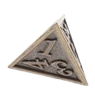
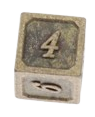
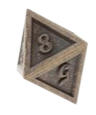
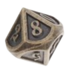
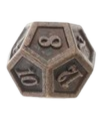
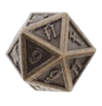

Os Dados
O teu arsenal da sorte
No RPG, os dados são mais do que simples ferramentas de sorte: são o coração das decisões, dos combates e
das consequências. Cada tipo de dado representa um papel diferente e está ligado a momentos únicos da
aventura. Em RPG, os dados são nomeados com a letra "d" seguida do número de faces. Ex: d20.
Tipos de Dados
     Quando Usar os Dados?
- Testes de Atributo:força, destreza, inteligência, etc. (normalmente com d20 + modificador)
- Ataques e Magias:rola-se um d20 para atingir, depois outro dado para calcular dano.
- Testes de Resistência:para evitar armadilhas, efeitos mágicos, doenças, etc.
- Jogadas de Sorte ou Aleatoriedade:como descobrir um item raro ou decidir o efeito de uma magia caótica.
Modificadores e Bônus
Nem sempre o resultado depende só da sorte. O valor final da rolagem pode ser influenciado por:
- Atributos do personagem
- Proficiência
- Efeitos mágicos ou condições do ambiente
- Vantagem/desvantagem(rolar dois d20 e escolher o melhor ou o pior resultado)